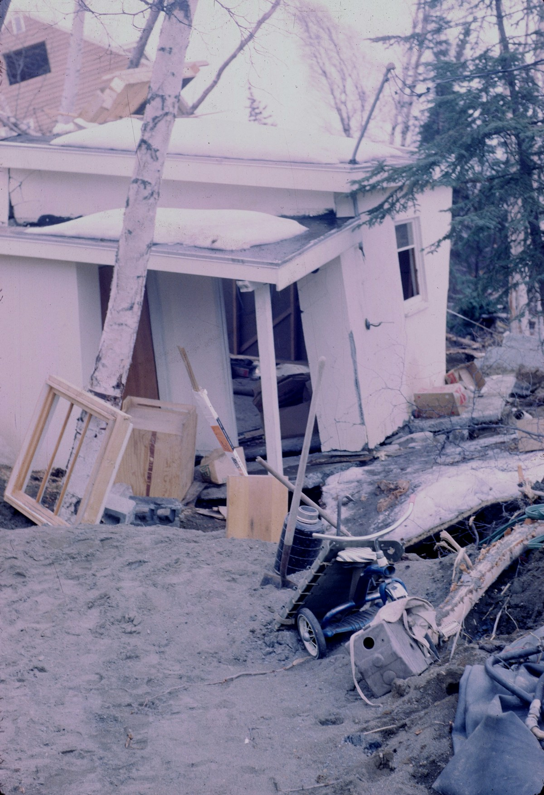

Qu'est-ce qu'une zone sismique et comment est-elle définie ?
Une zone sismique désigne une portion du territoire caractérisée par un niveau d'aléa sismique déterminé — c'est-à-dire la probabilité statistique qu'un séisme d'une certaine intensité se produise sur cette zone au cours d'une période donnée. En France, ce classement est établi par le Décret n°2010-1254 du 22 octobre 2010 relatif à la prévention du risque sismique, complété par l'arrêté du même jour. Ces textes ont remplacé les anciens règlements PS 69 et PS 92 et aligné la réglementation française sur les exigences de l'Eurocode 8 (EN 1998).
Le classement repose sur une valeur physique appelée accélération de référence au sol (agr), exprimée en m/s², calculée pour une période de retour de 475 ans. Elle représente l'intensité du mouvement du sol à ne pas dépasser, en conditions de sol de référence de type A (roche dure). Cette valeur est établie par le BRGM (Bureau de Recherches Géologiques et Minières) à partir des données du catalogue sismique historique français et de modèles de sources sismiques.
Aléa sismique ≠ risque sismique. L'aléa désigne la probabilité physique du phénomène naturel. Le risque sismique, lui, intègre également la vulnérabilité des constructions et l'exposition des personnes. Deux communes peuvent afficher le même aléa mais présenter un risque très différent selon la qualité et l'âge de leur bâti existant.
Les 5 zones sismiques officielles en France
Depuis le 1er mai 2011, date d'entrée en vigueur du Décret 2010-1254, toutes les communes françaises sont classées dans l'une des cinq zones de sismicité suivantes :
| Zone | Niveau de sismicité | Accélération agr | Exemples de territoires concernés |
|---|---|---|---|
| Zone 1 | Très faible | 0,4 m/s² | Île-de-France, Bretagne, Normandie, Pays de la Loire, Centre-Val de Loire, Nord |
| Zone 2 | Faible | 0,7 m/s² | Lorraine, Champagne-Ardenne, Bourgogne, Poitou-Charentes, Languedoc, Provence centrale |
| Zone 3 | Modérée | 1,1 m/s² | Alsace (fossé rhénan), Pyrénées, Alpes du Sud, Provence orientale (Nice, Alpes-Maritimes) |
| Zone 4 | Moyenne | 1,6 m/s² | Alpes du Nord (Savoie, Haute-Savoie, Isère), Martinique |
| Zone 5 | Forte | 3,0 m/s² | Guadeloupe — seul territoire français classé en zone 5 |
Ces valeurs d'accélération correspondent à des niveaux de sollicitation sismique de référence sur sol de type A. Dans la pratique, les calculs prennent également en compte la nature du sol de fondation (classes A à E selon l'EC8), qui amplifie ou atténue le mouvement sismique selon sa rigidité et sa composition.
Comment vérifier la zone sismique de votre commune ?
Plusieurs outils permettent d'identifier rapidement la zone de sismicité d'une commune :
Le portail Géorisques
La source officielle est le portail Géorisques (georisques.gouv.fr), développé par le BRGM et le ministère de la Transition écologique. En saisissant le nom ou le code postal d'une commune, on obtient une fiche synthétique listant l'ensemble des risques naturels et technologiques qui la concernent, dont la zone de sismicité et le niveau réglementaire applicable.
Le Plan Local d'Urbanisme (PLU)
Le PLU ou le Document d'Information Communal sur les Risques Majeurs (DICRIM), disponible auprès de la mairie, précise également le classement de la commune et peut recenser des mesures locales spécifiques, notamment si la commune est couverte par un Plan de Prévention des Risques Sismiques (PPRS).
Consulter directement un bureau d'études structure
Avant tout dépôt de permis de construire ou démarrage d'étude, le bureau d'études vérifie systématiquement la zone sismique et la catégorie d'importance du bâtiment (voir section suivante). Ce contrôle conditionne le choix de la réglementation applicable et le contenu de la note de calcul parasismique.
Attention aux communes frontalières. Dans certains secteurs, deux communes adjacentes peuvent appartenir à des zones de sismicité différentes. Un terrain situé en limite communale mérite une vérification précise sur la parcelle cadastrale, et non sur la seule commune. Le bureau de contrôle ou le bureau d'études peut effectuer cette vérification lors de la phase d'avant-projet.
Quelles obligations réglementaires selon la zone sismique ?
La zone sismique ne détermine pas à elle seule les obligations : il faut croiser ce classement avec la catégorie d'importance du bâtiment, définie par le Décret n°2010-1254 selon l'usage et la fréquentation de la construction.
Les catégories d'importance
- Catégorie I : constructions à faible occupation humaine (hangars agricoles, entrepôts sans personnel permanent)
- Catégorie II : habitations courantes, bureaux, commerces et ERP de faible importance (moins de 300 personnes)
- Catégorie III : ERP accueillant plus de 300 personnes, établissements d'enseignement, de santé, immeubles de grande hauteur
- Catégorie IV : bâtiments stratégiques (centres de secours, postes de commandement, hôpitaux de référence, ouvrages de sécurité civile)
La combinaison zone × catégorie détermine la réglementation parasismique applicable :
| Zone sismique | Catégorie II | Catégorie III | Catégorie IV |
|---|---|---|---|
| Zone 1 | Non réglementé | PS-MI 89 rév. 92 ou EC8 | Eurocode 8 |
| Zone 2 | PS-MI 89 rév. 92 (maisons individuelles) ou EC8 | Eurocode 8 | Eurocode 8 |
| Zone 3 | Eurocode 8 | Eurocode 8 | Eurocode 8 |
| Zone 4 | Eurocode 8 | Eurocode 8 | Eurocode 8 |
| Zone 5 | Eurocode 8 — dispositions renforcées | Eurocode 8 — dispositions renforcées | Eurocode 8 — dispositions renforcées |
Le règlement PS-MI 89 révisé 92 (Règles para-sismiques applicables aux maisons individuelles) s'applique exclusivement aux bâtiments de catégorie II de type maison individuelle, dans des conditions géométriques et structurelles précises (hauteur limitée, portées réduites, nombre de niveaux restreint). Au-delà de ces limites, seul l'Eurocode 8 est applicable. En zone 5, même les maisons individuelles de catégorie II doivent respecter l'Eurocode 8 avec les dispositions de l'Annexe Nationale Française (ANF) renforcée.

La Guadeloupe en zone sismique 5 : un cas particulier
La Guadeloupe est le seul territoire français classé en zone sismique 5, la plus élevée de l'échelle réglementaire nationale. Avec une accélération de référence de 3,0 m/s², soit plus de sept fois celle de la zone 1 continentale, la conception parasismique y est une contrainte structurante pour tous les projets de construction.
Cette situation s'explique par la position de l'archipel sur la zone de subduction des Petites Antilles, où la plaque nord-américaine plonge sous la plaque caraïbe. Cette interface produit régulièrement des séismes de magnitude élevée, dont certains ont causé des dommages considérables, notamment ceux de 1843 (estimé à magnitude 8,0) et de 2004 (magnitude 6,3, dit séisme des Saintes).
En Guadeloupe, toutes les constructions de catégorie II à IV sont soumises à l'Eurocode 8. Cette obligation concerne aussi bien les maisons individuelles que les immeubles de logements collectifs, les commerces, les équipements publics ou les bâtiments industriels. Une attestation parasismique AT1 est exigée au dépôt du permis de construire, et une attestation AT2 à l'achèvement des travaux.
Les exigences de l'Annexe Nationale Française à l'Eurocode 8 sont renforcées en zone 5, notamment pour les ductilités de classe DCM (Ductilité Courante Moyenne) et DCH (Ductilité Courante Haute), qui imposent des dispositions constructives spécifiques sur les armatures, les longueurs de recouvrement, les espacements de cadres et la résistance des nœuds poteaux-poutres.
Comment MH Structure vous accompagne
MH Structure intervient sur l'ensemble du territoire français, avec une expertise approfondie en zone sismique 5 (Guadeloupe, Petit-Bourg) et en France métropolitaine (Carmaux, Tarn). Nos prestations couvrent l'ensemble de la chaîne réglementaire :
- Identification de la zone sismique et de la catégorie d'importance applicable à votre projet
- Choix de la réglementation : PS-MI ou Eurocode 8, selon le type de bâtiment, la zone et la catégorie
- Notes de calcul parasismiques complètes, conformes à l'Eurocode 8 et à l'Annexe Nationale Française
- Plans de coffrage et d'armatures intégrant les dispositions constructives parasismiques (cadres de confinement, chevauchements, nœuds)
- Attestations parasismiques AT1 et AT2 pour les permis de construire et les déclarations d'achèvement en zones 2 à 5
- Diagnostics sismiques sur bâtiments existants pour les projets de réhabilitation ou de changement de destination
Vous ne savez pas dans quelle zone sismique se trouve votre terrain ? Contactez-nous : nous vérifions le classement de votre commune et vous indiquons rapidement si votre projet est soumis à la réglementation parasismique, et laquelle. Premier échange gratuit.
Photos : Dan Meyers, Ivan Bandura, NOAA — via Unsplash